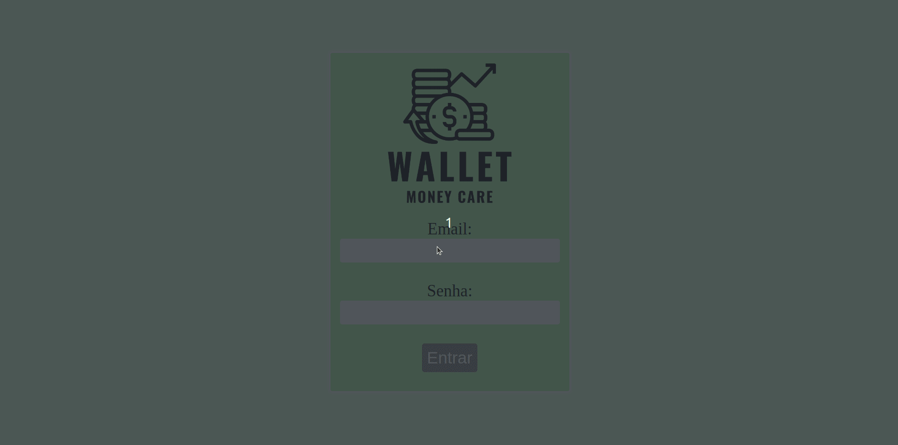
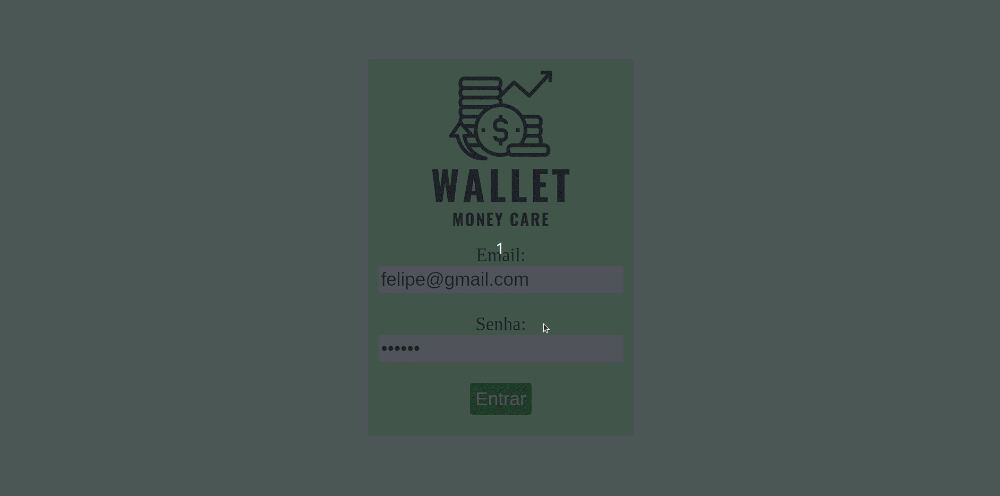
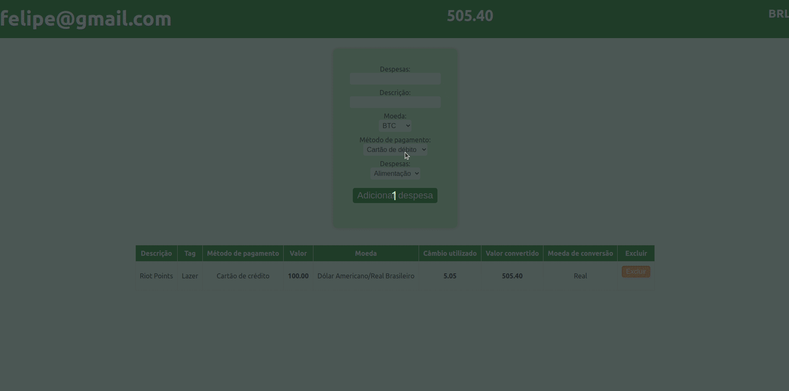

Aqui é possível visualizar o projeto em pleno funcionamento e explorar suas principais funcionalidades por meio de printscreens e gifs. Caso deseje executar o projeto em sua própria máquina ou queira ver detalhes sobre linguagens e habilidades usadas, basta selecionar a opção "GITHUB" no menu superior, onde encontrará detalhes sobre a instalação do projeto em seu ambiente local. Lembre-se de me contar o que achou do projeto, ficarei imensamente feliz em receber o seu feedback. Ou caso tenha alguma dúvida sobre o projeto, você pode clicar em "DUVIDAS" e me mandar uma mensagem diretamente ou ir em HOME, lá você encontra todas as minhas redes sociais.
Esse projeto é uma aplicação React de uma carteira de controle de gastos com conversor de moedas, na qual essa aplicação consome dados de uma API para conseguir o câmbio atualizado de várias moedas. O usuário pode adicionar e remover uma despesa e visualizar por meio de uma tabela as suas despesas cadastradas.
Ao executar o aplicativo o usuário tem que fazer login no sistema, para ter seu email registrado na carteira.
Ao entrar na carteira o usuário pode preencher algumas despesas, veja abaixo
Como você pode notar, a tabelas tem várias informações, como o câmbio utilizado para conversão em real. Observe também que ao adicionar uma despesa o valor total de despesas presente no cabeçalho da página é atualizado com o valor gasto em reais. Existe também uma função para apagar uma despesa, veja abaixo:
É um projeto simples, mas trabalha muito bem o gerenciamento de estado usando o redux, você também pode testar o projeto, caso queira conhecer a carteira por trás da tela, volto a te convidar para visitar o repositório do projeto no github, basta clicar aqui